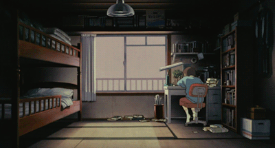
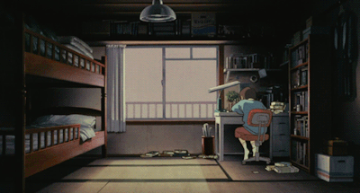

"There has to be a better way..."
What sparked my interest in coding was using Microsoft Power Automate to improve processes at my workplace. I previously worked as a prosthetist orthotist, fitting patients with prosthetic limbs and bracing. I was frustrated that many of our existing processes were redundant. So, to automate those time-consuming tasks, I created workflows in Power Automate and learned the basics of conditionals, loops, and arrays.
"Wait, did I just make that work?"
I quickly realized that I enjoyed the problem-solving aspect, like solving a puzzle. One could say I was a bit obsessed. Sometimes I would finish seeing a patient and immediately get back to working on optimizing a workflow. I was surprised how much I found myself relishing the feeling when a process I had improved was now working as intended and much more efficiently than before. Just as with patient care, programming requires creative problem solving. Everytime I solve a little problem, it triggers that reward system in my brain with sweet, sweet positive reinforcement! After doing tutorials, like Ada's introductory curriculum, Jumpstart, it has cemented the fact that I can be in this space. I don’t have to be a hacker or a gamer, or have been coding since I was 10.
"What now?"
Seriously making the move into tech seemed daunting without a degree in computer science. How do I even get my foot in the door? With encouragement from my partner, I applied to Ada Developers Academy, a revered coding school for women and gender diverse adults. Every Ada alum I spoke to was passionate about the Ada community. They all felt supported and felt like everyone was there to lift each other up. Coming from a traditional education with over-crowded classes of 200-300 students, I have memories of people warning me about hyper-competitive classmates sabotaging labs to get ahead. So, a program that emphasizes collaboration and community sounded like make-believe. Even now, actually getting into / being at Ada, I am still in disbelief!
"What to do with my newfound powers?"
I want the best of both worlds! As a health professional, I see the potential in programming to improve health outcomes. With programming, I can help a wider audience. I've worked personally with hundreds of patients but with web and software development, I could potentially reach millions of people. Whether through improving accessibility of clinical resources on a website, or improving patient education with an app, there is potential to make a greater impact with coding.

 
